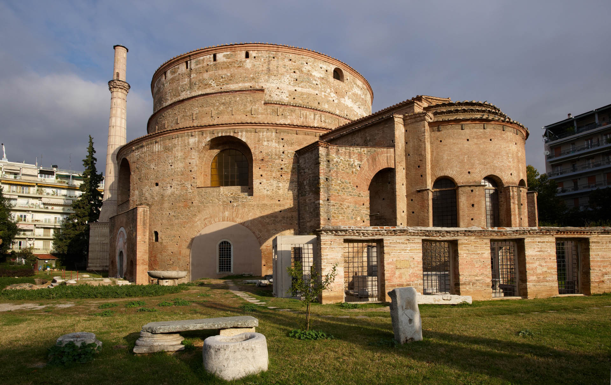

Η Ροτόντα βρίσκεται στο ανατολικό τμήμα του ιστορικού κέντρου της Θεσσαλονίκης και αποτελεί ένα από τα σπουδαιότερα ρωμαϊκά μνημεία στην Ελλάδα. Από το 1988 ανήκει στα μνημεία Παγκόσμιας Πολιτιστικής Κληρονομιάς της UNESCO. Στις 18 Δεκεμβρίου 2015 η Ροτόντα μετά από τις εργασίες αποκατάστασης άνοιξε τις πύλες της στο κοινό και ξαναβρήκε τη θέση της στην πολιτιστική κληρονομιά της Θεσσαλονίκης. Η Ροτόντα αποτελεί τμήμα του ανακτορικού συγκροτήματος του αυτοκράτορα Γαλερίου και κατασκευάστηκε κατά τη διάρκεια της Ρωμαϊκής Τετραρχίας. Μαυσωλείο, χώρος λατρευτικών μυστηρίων, ναός, μητρόπολη, τζαμί, La Rotonde, μουσείο. Όπως κι αν περιγραφεί η Ροτόντα δεν παύει να είναι άρρηκτα δεμένη και συνυφασμένη με την εικόνα και την ιστορία της Θεσσαλονίκης.
Ο Άγιος Δημήτριος έζησε και μαρτύρησε στη Θεσσαλονίκη επί Διοκλητιανού. Λόγω προβλημάτων της αγιολογικής παράδοσης, για τις απαρχές και την προέλευση της λατρείας του έχουν διατυπωθεί από το 19ο αιώνα διάφορες θεωρίες, επικρατέστερη των οποίων μεταξύ των μελετητών είναι ότι δεν υπήρξε Δημήτριος που μαρτύρησε στη Θεσσαλονίκη, αλλά η λατρεία του προέρχεται από το Σίρμιο της Παννονίας. Σημαντικό κέντρο της λατρείας του είναι η Θεσσαλονίκη, όπου τιμάται από την πρωτοχριστιανική περίοδο και έχει ανεγερθεί βασιλική προς τιμήν του. Κατά τους βυζαντινούς χρόνους τιμώταν ως θαυματουργός προστάτης της πόλης από εχθρούς πολιορκητές της και κατά την εορτή του πραγματοποιούνταν θρησκευτική και εμπορική πανήγυρις, τα Δημήτρια, που αναβίωσαν τη δεκαετία του 1960 ως πολιτιστική διοργάνωση. Είναι ένας από τους λαοφιλέστερους αγίους της Ορθόδοξης Εκκλησίας, που εορτάζει τη μνήμη του στις 26 Οκτωβρίου.

Τα Βυζαντινά τείχη της Θεσσαλονίκης έχουν σήμερα μήκος περίπου 4 χιλιομέτρων, αλλά η αρχική περίμετρος που κάλυπταν ήταν 8 χιλιόμετρα και το ύψος τους ήταν 10-12 μέτρα. Το τείχος για πολλούς αιώνες περιέβαλλε την πόλη, περιλαμβάνοντας στη νοτιοδυτική πλευρά προς το Θερμαϊκό κόλπο παραθαλάσσια τείχη, τα οποία όμως σήμερα δεν υπάρχουν. Στη βορειοανατολική πλευρά ανεβαίνει προς τα υψώματα, περιλαμβάνοντας ακρόπολη, μέσα στην οποία βρίσκεται και το αμυντικό σύμπλεγμα του Επταπυργίου.
Στο δυτικό και ανατολικό τείχος υπάρχουν τριγωνικοί πρόβολοι, ενώ στα πιο ψηλά σημεία και ιδίως στο τμήμα που χωρίζει την ακρόπολη από την πόλη υπάρχουν ορθογώνιοι πύργοι. Το χτίσιμο τους περιλαμβάνει επαναλαμβανόμενες σειρές τούβλων και πετρωμάτων διακοσμημένες με χριστιανικά (σταυρούς) και αρχαιοελληνικά σύμβολα (απεικονίσεις του ήλιου, ρόμβους). Παρόμοιας τεχνοτροπίας είναι και τα βυζαντινά τείχη που σώζονται στην Κωνσταντινούπολη.
Σήμερα αποτελούν ιδιαίτερο και αξιόλογο μνημείο της Θεσσαλονίκης καθώς και ένα εκ των τοποσήμων αυτής, ενώ έχουν χαρακτηριστεί επίσημα ως Μνημείο Παγκόσμιας Πολιτισμικής Κληρονομιάς από την ΟΥΝΕΣΚΟ.